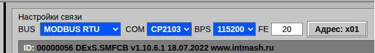
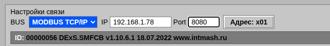

3. Подключение контроллера
Эта глава описывает порядок установления связи с контроллером и чтения идентификационной строки.
В верхней части окна расположены основные кнопки управления:
| Кнопка | Назначение |
|---|---|
| 🔧 | Список устройств: обновление, фильтрация по месту установки, типу и т.д. |
| 🔍 | Поиск устройств в сети Modbus |
| 📋 | Создание отчёта по текущей конфигурации |
| 📈 | Осциллограф: показ/скрытие и меню просмотра .rec-файлов |
>_ |
Командная строка для ручного обмена с контроллером |
| 📁 | Открытие INI-файла или папки с ini файлами (только в Linux) |
| Подключиться | Установить соединение с контроллером, прочитать идентификационную строку устройства и искать среди загруженных ini файлов “родной” ini файл - с идентичным номером |
| ID | Установить соединение с контроллером и прочитать идентификационную строку устройства |
| ? | Поиск нужного ini файла по месту установки в раскрывающихся списках слева в таблице или поиск параметра по его номеру или имени |
| Открыть руководство пользователя / О программе |
3.1. Настройки связи
Ниже верхней панели, в правой части экрана, расположены поля настройки связи. Их состав зависит от протокола, выбранного в списке BUS.
Режим MODBUS RTU
Отображаются поля: COM, BPS (скорость), FE (длина кадра) и кнопка Адрес — адрес устройства в сети Modbus.

Режим MODBUS TCP/IP
Отображаются поля: IP — адрес хоста, Port — TCP-порт (по умолчанию 8080) и кнопка Адрес.

3.2. Баннер ID
После успешного подключения в поле «ID» появляется строка
идентификации устройства, например:
ID: 00000396 DExS.SMFCB v1.10.6.1 18.07.2022 www.intmash.ru.
Сокращённая версия (серийный номер и тип) выводится в шапке
осциллографа.
3.3. Подготовка к подключению
При первичном запуске Ajuster нужно выбрать базовую папку в файловой системе с необходимым контентом ( папки с *.ini файлами, папка Records…)
- Подключите контроллер к компьютеру ( USB, RS-485 или Ethernet ). Выберите нужный порт в списке COM (режим RTU) либо укажите IP и Port (режим TCP/IP).
При необходимости задайте скорость в списке BPS и адрес устройства кнопкой Адрес.
- Кликните кнопку Открыть файл или Открыть папку ( в Linux ) и выберите из базовой папки 1 или несколько .ini файлов, или папку с .ini файлами ( в Linux ).
3.4. Установка соединения
Кликните кнопку Подключиться. Программа:
- Предложит выбрать com порт из доступных в системе
- Откроет порт и пошлёт запрос идентификации. Номер порта не отображается в целях безопасности. Только имя преобразователя USB-to-UART
- Считает строку ID и выведет её в поле «ID».
- Найдёт среди загруженных ini-файлов «родную» конфигурацию по серийному номеру и типу устройства.
Если родной ini найден — он автоматически выбирается в списке устройств. Если не найден — открывается окно «Новое устройство».
3.5. Потеря связи
Если контроллер перестал отвечать, программа показывает сообщение «Контроллер не отвечает», а осциллограф замораживает графики. После восстановления связи опрос продолжится автоматически.